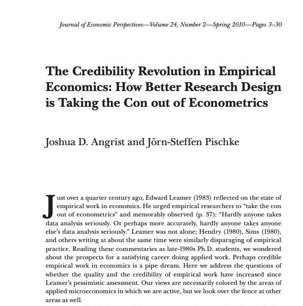

Week 05:
Prediction with Linear Regression
Overview
General Plan
- Group Assignment 1: Research Questions
- Setup
- Packages
- Data
- Feedback
- Review
- Casual inference
- Covariate Adjustment
- Linear Models
- Conceptual
- Practical
- Technical
- Theoretical
- Three Common Observational Designs
- Difference in Difference
- Regression Discontinuity
- Instrumental Variable Designs
class: inverse, center, middle # Research Questions
Research Questions
Template here
Upload to Canvas this Sunday
3 Research questions:
One-sentence research question
Why do we care
Ideal experiment
Observational study
Feasibility
class:inverse, middle, center # 💪 ## Get set up to work
New packages
Hopefully, you were all able to install the following packages
Census API:
Additionally, I hope you have all followed the steps here:
- Install the
tidycensuspackage - Load the installed package
- Request an API key from the Census
- Check your email
- Activate your key
- Install your API key in R
- Check that everything worked
To install the an API key so we can download data directly from the US Census
Packages for today
the_packages <- c(
## R Markdown
"kableExtra","DT","texreg",
## Tidyverse
"tidyverse", "lubridate", "forcats", "haven", "labelled",
## Extensions for ggplot
"ggmap","ggrepel", "ggridges", "ggthemes", "ggpubr",
"GGally", "scales", "dagitty", "ggdag", "ggforce",
# Data
"COVID19","maps","mapdata","qss","tidycensus", "dataverse", #<<
# Analysis
"DeclareDesign", "easystats", "zoo"#<<
)Define a function to load (and if needed install) packages
Load packages for today
kableExtra DT texreg tidyverse lubridate
TRUE TRUE TRUE TRUE TRUE
forcats haven labelled ggmap ggrepel
TRUE TRUE TRUE TRUE TRUE
ggridges ggthemes ggpubr GGally scales
TRUE TRUE TRUE TRUE TRUE
dagitty ggdag ggforce COVID19 maps
TRUE TRUE TRUE TRUE TRUE
mapdata qss tidycensus dataverse DeclareDesign
TRUE TRUE TRUE TRUE TRUE
easystats zoo
TRUE TRUE class:inverse, center, middle # 💪 ## Load Data for today
Load the Covid-19 Data
Filter Covid-19 Data to US States
# Vector containing of US territories
territories <- c(
"American Samoa",
"Guam",
"Northern Mariana Islands",
"Puerto Rico",
"Virgin Islands"
)
# Filter out Territories and create state variable
covid_us <- covid %>%
filter(!administrative_area_level_2 %in% territories)%>%
mutate(
state = administrative_area_level_2
)Mutate: Calculate New Cases
Calculating a Rolling Average New Cases
# A tibble: 52,580 × 4
# Groups: state [51]
state date new_cases_pc new_cases_pc_7da
<chr> <date> <dbl> <dbl>
1 Minnesota 2020-03-06 NA NA
2 Minnesota 2020-03-07 0 NA
3 Minnesota 2020-03-08 0.0177 NA
4 Minnesota 2020-03-09 0 NA
5 Minnesota 2020-03-10 0.0177 NA
6 Minnesota 2020-03-11 0.0355 NA
7 Minnesota 2020-03-12 0.0709 NA
8 Minnesota 2020-03-13 0.0887 0.0329
9 Minnesota 2020-03-14 0.124 0.0507
10 Minnesota 2020-03-15 0.248 0.0836
# ℹ 52,570 more rowsNew Case Per Capita
.pull-left[
covid_us %>%
filter(date > "2020-03-05",
state == "Minnesota") %>%
select(date,
new_cases_pc,
new_cases_pc_7da)%>%
ggplot(aes(date,new_cases_pc ))+
geom_line(aes(col="Daily"))+
theme(legend.position="bottom")+
labs( col = "Measure",
y = "New Cases Per 100k", x = "",
title = "Minnesota"
) -> fig_covid_mn ]
.pull-right[

]
New Case Per Capita vs 7-day average
.pull-left[
]
.pull-right[

]
Facemask Policy
covid_us %>%
mutate(
# Recode facial_coverings to create face_masks
face_masks = case_when(
facial_coverings == 0 ~ "No policy",
abs(facial_coverings) == 1 ~ "Recommended",
abs(facial_coverings) == 2 ~ "Some requirements",
abs(facial_coverings) == 3 ~ "Required shared places",
abs(facial_coverings) == 4 ~ "Required all times",
),
# Turn face_masks into a factor with ordered policy levels
face_masks = factor(face_masks,
levels = c("No policy","Recommended",
"Some requirements",
"Required shared places",
"Required all times")
)
) -> covid_usMutate: Dates and Vaccinations
Load Data on Presidential Elections
# Try this code first
Sys.setenv("DATAVERSE_SERVER" = "dataverse.harvard.edu")
pres_df <- get_dataframe_by_name(
"1976-2020-president.tab",
"doi:10.7910/DVN/42MVDX"
)
# If the code above fails, comment out and uncomment the code below:
# load(url("https://pols1600.paultesta.org/files/data/pres_df.rda"))HLO of Presidential Elections Data
# A tibble: 6 × 15
year state state_po state_fips state_cen state_ic office candidate
<dbl> <chr> <chr> <dbl> <dbl> <dbl> <chr> <chr>
1 1976 ALABAMA AL 1 63 41 US PRESIDENT "CARTER, JI…
2 1976 ALABAMA AL 1 63 41 US PRESIDENT "FORD, GERA…
3 1976 ALABAMA AL 1 63 41 US PRESIDENT "MADDOX, LE…
4 1976 ALABAMA AL 1 63 41 US PRESIDENT "BUBAR, BEN…
5 1976 ALABAMA AL 1 63 41 US PRESIDENT "HALL, GUS"
6 1976 ALABAMA AL 1 63 41 US PRESIDENT "MACBRIDE, …
# ℹ 7 more variables: party_detailed <chr>, writein <lgl>,
# candidatevotes <dbl>, totalvotes <dbl>, version <dbl>, notes <lgl>,
# party_simplified <chr>Transform Data to get just 2020 Election
pres_df %>%
mutate(
year_election = year,
state = str_to_title(state),
# Fix DC
state = ifelse(state == "District Of Columbia", "District of Columbia", state)
) %>%
filter(party_simplified %in% c("DEMOCRAT","REPUBLICAN"))%>%
filter(year == 2020) %>%
select(state, state_po, year_election, party_simplified, candidatevotes, totalvotes
) %>%
pivot_wider(names_from = party_simplified,
values_from = candidatevotes) %>%
mutate(
dem_voteshare = DEMOCRAT/totalvotes *100,
rep_voteshare = REPUBLICAN/totalvotes*100,
winner = forcats::fct_rev(factor(ifelse(rep_voteshare > dem_voteshare,"Trump","Biden")))
) -> pres2020_dfTransform Data to get just 2020 Election
# A tibble: 6 × 9
state state_po year_election totalvotes DEMOCRAT REPUBLICAN dem_voteshare
<chr> <chr> <dbl> <dbl> <dbl> <dbl> <dbl>
1 Alabama AL 2020 2323282 849624 1441170 36.6
2 Alaska AK 2020 359530 153778 189951 42.8
3 Arizona AZ 2020 3387326 1672143 1661686 49.4
4 Arkansas AR 2020 1219069 423932 760647 34.8
5 California CA 2020 17500881 11110250 6006429 63.5
6 Colorado CO 2020 3279980 1804352 1364607 55.0
# ℹ 2 more variables: rep_voteshare <dbl>, winner <fct>Load Data on Median State Income from the Census
HLO: Census Data
Tidy Census Data
Tidy Census Data
Merge election data and covid data into single df
.pull-left[ - We’re going to take our covid_us data and merge into this data on the 2020 election from pres2020_df using the common state variable in each data set for a left_join()
Always check the matches in your joining variable (i.e.
state)Below we see that our recoding of state to title case in created a mismatch
]
.pull-right[
[1] 51character(0)# Fix
pres2020_df$state[pres2020_df$state == "District Of Columbia"] <- "District of Columbia"
# Problem Solved
sum(pres2020_df$state %in% covid_us$state)[1] 51]
Merge election data into Covid data
Merge Census data into Covid data
[1] 53678 64[1] 52 3covid_us <- covid_us %>% left_join(
acs_df,
by = c("state" = "state")
)
dim(covid_us) # Same number of rows as covid_us w/ 2 additional columns[1] 53678 66
Red Covid, an Update New York Times, 18 February, 2022
Preview of the Lab
Conceptually, this lab is designed to help reinforce the relationship between linear models like \(y=\beta_0 + \beta_1x\) and the conditional expectation function \(E[Y|X]\).
Questions 1-5 are designed to reinforce your data wrangling skills. In particular, you will get practice:
- Creating and recoding variables using
mutate() - Calculating a moving average or rolling mean using the
rollmean()function from thezoopackage - Transforming the data on presidential elections so that it can be merged with the data on Covid-19 using the
pivot_wider()function. - Merging data together using the
left_join()function.
- Creating and recoding variables using
In question 6, you will see how calculating conditional means provides a simple test of “Red Covid†claim.
In question 7, you will see how a linear model returns the same information as these conditional means (in a sligthly different format)
In question 8, you will get practice interpreting linear models with continuous predictors (i.e. predictors that take on a range of values)
In question 9, you will get practice visualizing these models and using the figures help interpret your results substantively.
Question 10 asks you to play the role of a skeptic and consider what other factors might explain the relationships we found in Questions 6-9. We will explore these factors in next week’s lab.
class: inverse, center, middle background-image: url(“https://i.pinimg.com/originals/a2/05/b6/a205b689caf19f3287b1544cbe0e6b7b.jpg”) background-size: contain # 📢 ## Feedback
# A tibble: 21 × 29
StartDate EndDate Status IPAddress Progress
<dttm> <dttm> <dbl+lbl> <chr> <dbl>
1 2023-02-23 13:47:36 2023-02-23 13:49:09 0 [IP Address] 128.148.206.… 100
2 2023-02-23 13:47:34 2023-02-23 13:49:13 0 [IP Address] 128.148.207.… 100
3 2023-02-23 13:47:30 2023-02-23 13:49:17 0 [IP Address] 128.148.204.… 100
4 2023-02-23 13:47:32 2023-02-23 13:49:26 0 [IP Address] 128.148.204.… 100
5 2023-02-23 13:47:50 2023-02-23 13:49:35 0 [IP Address] 128.148.205.… 100
6 2023-02-23 13:47:17 2023-02-23 13:49:38 0 [IP Address] 192.91.235.1… 100
7 2023-02-23 13:48:03 2023-02-23 13:49:42 0 [IP Address] 128.148.205.… 100
8 2023-02-23 13:47:14 2023-02-23 13:49:48 0 [IP Address] 128.148.206.… 100
9 2023-02-23 13:47:33 2023-02-23 13:49:54 0 [IP Address] 128.148.207.… 100
10 2023-02-23 13:47:49 2023-02-23 13:49:54 0 [IP Address] 128.148.207.… 100
# ℹ 11 more rows
# ℹ 24 more variables: Duration__in_seconds_ <dbl>, Finished <dbl+lbl>,
# RecordedDate <dttm>, ResponseId <chr>, RecipientLastName <chr>,
# RecipientFirstName <chr>, RecipientEmail <chr>, ExternalReference <chr>,
# LocationLatitude <chr>, LocationLongitude <chr>, DistributionChannel <chr>,
# UserLanguage <chr>, Likes <chr>, Dislikes <chr>, code_skills <chr>,
# code_challenge <chr>, eval_1 <dbl>, eval_2 <dbl>, eval_3 <dbl>, …What we liked and learned
–
- Causal Inference!
- Data Viz
- Programming
- Review
- Dank Memes
What we liked
What we’ve learned
[1] ""
[2] "Separate my code effectively into useful code chunks!\n"
[3] "I'm not entirely sure"
[4] "putting data$ something in the tutorials"
[5] "the basics I have down pretty well, setting up loading and the basic adjustments"
[6] "I think I am learning pretty well to discern commands and explain what each line does."
[7] "organizing my code into chunks that make sense for me\n"
[8] "Creating different code chunks and labelling them."
[9] "setting up workspace and staying organized while coding"
[10] "It's really satisfying making graphs!"
[11] "Loading them packages."
[12] "follow instructions"
[13] "I feel like I am good at understanding what things do"
[14] "Set up data/loading libraries, simple filtering of data and making graphs"
[15] "Making things organized"
[16] "Simple arithmetic functions, basic plotting"
[17] "Make chunks, load packages, paste things"
[18] "using summary on data tables"
[19] "I think I've gotten comfortable with getting the workspace set up and looking over and cleaning data."
[20] "I am good at FAAFing O"
[21] "I feel confident using the commands to look at the data! But not quite yet confident on how to mutate the data."
attr(,"label")
[1] "What's one thing you do really well in R?"
attr(,"format.spss")
[1] "A2000"
attr(,"display_width")
[1] 15What we disliked or struggled with
- Stats
- DAGs
- Regression
- Pacing
- Keeping track of various concepts and skills
- Lack of breaks
- Too much review
What we disliked
[1] 4What we’ve struggled with
[1] 0 NA NA NA NA NA 0 NA 0 NA 0 NA NA NA NA NA NA 9 NA NA 10
attr(,"label")
[1] "How do you think we're doing? Please provide a rough assessment of the performance of: - President Donald Trump"
attr(,"format.spss")
[1] "F40.2"
attr(,"display_width")
[1] 5class:inverse, middle, center # 🔠## Review
Review
Casual Inference
Covariate Adjustment
class:inverse, middle, center # 🔠## Causal Inference
Review: Causal Inference
- Causal inference is about counterfactual comparisons
–
- Some counterfactuals are easier to imagine or create than others
–
- Randomization solves the fundamental problem of causal inference allowing us to estimate average treatment effects free from selection bias
–
- Randomization is not always possible, desirable, or ethical
–
- Observational designs that try to estimate causal effects need to justify assumptions about conditional independence:
\[ Y_i(1),Y_i(0) \perp D_i |X_i \]
–
- This assumption goes by many, jargony names: Selection on Observables, Conditional Independence, No unmeasured confounders.
–
- Credibility of this assumption depends less on having a lot of data, and more on how your data were generated.
–
- Observational designs estimate the effect of \(D\) conditional on \(X\) using covariate adjustment.
class:inverse, middle, center # 🔠## Covariate Adjustment
Review: Covariate Adjustment
- Covariate adjustment are a set of statistical procedures that allow us to estimate conditional values
- \(e.g.(E[Y|X=x]), E[Happiness| leetCoder == T]\)
- We adjust for covariates to improve our predictions and make credible comparisons
- \(E[\text{New Covid-19 cases}|\text{Face mask policy}]\) vs \(E[\text{New Covid-19 cases}|\text{Face mask policy |June 2020 },]\)
- \(ATE = E[Y| D = 1] - E[Y | D=0]\)
- Three approaches:
- Subclassification
- Matching
- Regression
Subclassification
Subclassification is a simple way to adjust for a covariate
- Subset the data to include only the values you want (\(X=x\), \(D=1\), \(Interverntion = Treated\)) and calculate the quantity of interest (e.g. a conditional mean,
mean(df$income[df$age <30]))
- Subset the data to include only the values you want (\(X=x\), \(D=1\), \(Interverntion = Treated\)) and calculate the quantity of interest (e.g. a conditional mean,
–
But what if we want to control for more than one variable?
What if our variables aren’t categorical like sex, but continuous like height?
–
The Curse of Dimensionality as you attempt to adjust for more covariates (add more dimensions), the space of possible combinations grows exponentially
- Assumption of Common Support likely to be violated \(0 < Pr(D_i = 1|X_i) < 1\)
Matching
Matching refers to a broad set of procedures that try to recreate what randomization provides: covariate balance
- covariate balance is a fancy term for saying that in the aggregate, two groups look similar accept on group received the treatment \((D=1)\) while another group did not \((D=0)\)
–
- There are many ways to try to match observations:
- Exact matching: Find exact matches between treatment and control observations for all covariates \(X\). Only works for a few covariates.
- Coarsened exact matching: Find approximate matches within ranges of values for \(X\)
- Matching on summaries of the covariates calculating a single measure of the similarility of observations and matching on this summary to produce covariate balance.
–
- Matching:
- Conceptually appealing (mirrors the logic of an experiment)
- Technically complex (complicated algorithms, finicky software)
- Only provides balance on observed covariates
class: inverse, center, middle # 💡
# Linear Regression ## The Basics
Understanding Linear Regression
- Conceptual
- Simple linear regression estimates “a line of best fit†that summarizes relationships between two variables
\[ y_i = \beta_0 + \beta_1x_i + \epsilon_i \]
- Practical
- We estimate linear models in R using the
lm()function
- We estimate linear models in R using the
- Technical/Definitional
- Linear regression chooses \(\beta_0\) and \(\beta_1\) to minimize the Sum of Squared Residuals (SSR):
\[\textrm{Find }\hat{\beta_0},\,\hat{\beta_1} \text{ arg min}_{\beta_0, \beta_1} \sum (y_i-(\beta_0+\beta_1x_i))^2\]
- Theoretical
- Linear regression provides a linear estimate of the conditional expectation function (CEF): \(E[Y|X]\)
class: inverse, center, middle # 💡
# Conceptual: Linear Regression ## Linear Regression Provides an Estimate of the Line of Best Fit
Conceptual: Linear Regression
Regression is a tool for describing relationships.
How does some outcome we’re interested in tend to change as some predictor of that outcome changes?
How does economic development vary with democracy?
How does economic development vary with democracy, adjusting for natural resources like oil and gas
Formally:
\[ y_i = f(x_i) + \epsilon \]
Y is a function of X plus some error, \(\epsilon\)
Linear regression assumes that relationship between an outcome and a predictor can be by a linear function
\[ y_i = \beta_0 + \beta_1 x_i + \epsilon \]
Linear Regression and the Line of Best Fit
- The goal of linear regression is to choose coefficients \(\beta_0\) and \(\beta_1\) to summarizes the relationship between \(y\) and \(x\)
\[ y_i = \beta_0 + \beta_1 x_i + \epsilon \]
To accomplish this we need some sort of criteria.
For linear regression, that criteria is minimizing the error between what our model predicts \(\hat{y_i} = \beta_0 + \beta_1 x_i\) and what we actually observed \((y_i)\)
More on this to come. But first…
Regression Notation
\(y_i\) an outcome variable or thing we’re trying to explain
- AKA: The dependent variable, The response Variable, The left hand side of the model
\(x_i\) a predictor variables or things we think explain variation in our outcome
AKA: The independent variable, covariates, the right hand side of the model.
Cap or No Cap: I’ll use \(X\) (should be \(\mathbf{X}\)) to denote a set (matrix) of predictor variables. \(y\) vs \(Y\) can also have technical distinctions (Sample vs Population, observed value vs Random Variable, …)
\(\beta\) a set of unknown parameters that describe the relationship between our outcome \(y_i\) and our predictors \(x_i\)
\(\epsilon\) the error term representing variation in \(y_i\) not explained by our model.
Linear Regression
Let’s return to the simple (bivariate) linear regressions we introduced last week:
\[ y_i = \beta_0 + \beta_1 x_i + \epsilon \]
We call this a bivariate regression, because there are only two variables.
We call this a linear regression, because \(y_i = \beta_0 + \beta_1 x_i\) is the equation for a line, where:
\(\beta_0\) corresponds to the \(y\) intercept, or the model’s prediction when \(x = 0\).
\(\beta_1\) corresponds to the slope, or how \(y\) is predicted to change as \(x\) changes.
Linear Regression
- If you find this notation confusing, try plugging in substantive concepts for what \(y\) and \(x\) represent
- Say we wanted to know how attitudes to transgender people varied with age in the baseline survey from Lab 03.
The generic linear model
\[y_i = \beta_0 + \beta_1 x_i + \epsilon\]
Reflects:
\[\text{Transgender Feeling Thermometer}_i = \beta_0 + \beta_1\text{Age}_i + \epsilon_i\]
Practical: Estimating a Linear Regression
- We estimate linear regressions in
Rusing thelm()function. lm()requires two arguments:- a
formulaargument of the general formy ~ xread as “Y modeled by X†or below “Transgender Feeling Thermometer (y) modeled by (~) Age (x) - a
dataargument telling R where to find the variables in the formula
- a
load(url("https://pols1600.paultesta.org/files/data/03_lab.rda"))
m1 <- lm(therm_trans_t0 ~ vf_age, data = df)
m1
Call:
lm(formula = therm_trans_t0 ~ vf_age, data = df)
Coefficients:
(Intercept) vf_age
62.8196 -0.2031 The coefficients from lm() are saved in object called m1
Call:
lm(formula = therm_trans_t0 ~ vf_age, data = df)
Coefficients:
(Intercept) vf_age
62.8196 -0.2031 m1 actually contains a lot of information
Practical: Interpreting a Linear Regression
We can extract the intercept and slope from this simple bivariate model, using the coef() function
Practical: Interpreting a Linear Regression
The two coefficients from m1 define a line of best fit, summarizing how feelings toward transgender individuals change with age
\[y_i = \beta_0 + \beta_1 x_i + \epsilon\]
\[\text{Transgender Feeling Thermometer}_i = \beta_0 + \beta_1\text{Age}_i + \epsilon_i\]
\[\text{Transgender Feeling Thermometer}_i = 62.82 + -0.2 \text{Age}_i + \epsilon_i\]
Practical: Predicted values from a Linear Regression
Often it’s useful for interpretation to obtain predicted values from a regression.
To obtain predicted vales \((\hat{y})\), we simply plug in a value for \(x\) (In this case, \(Age\)) and evaluate our equation.
For example, might we expect attitudes to differ among an 18-year-old college student and their 68-year-old grandparent?
\[\hat{FT}_{x=18} = 62.82 + -0.2 \times 18 = 59.16\] \[\hat{FT}_{x=65} = 62.82 + -0.2 \times 68 = 49.01\]
Practical: Predicted values from a Linear Regression
We could do this by hand
Practical: Predicted values from a Linear Regression
More often we will:
- Make a prediction data frame (called
pred_dfbelow) with the values of interests - Use the
predict()function with our linear model (m1) andpred_df - Save the predicted values to our new column in our prediction data frame
Practical: Predicted values from a Linear Regression
Practical: Visualizing Linear Regression
We can visualize simple regression by:
plotting a scatter plot of the outcome (y-axis) and predictors (x-axis)
overlaying the line defined by
lm()
fig_lm <- df %>%
ggplot(aes(vf_age,therm_trans_t0))+
geom_point(size=.5, alpha=.5)+
geom_abline(intercept = coef(m1)[1],
slope = coef(m1)[2],
col = "blue"
)+
geom_vline(xintercept = 0,linetype = 2)+
xlim(0,100)+
annotate("point",
x = 0, y = coef(m1)[1],
col= "red",
)+
annotate("text",
label = expression(paste(beta[0],"= 62.81" )),
x = 1, y = coef(m1)[1]+5,
hjust = "left",
)+
labs(
x = "Age",
y = "Feeling Thermometer toward\nTransgender People"
)+
theme_classic()
fig_lm


background-image:url(“https://i.imgflip.com/66mx9d.jpg”) background-size:contain
class: inverse, center, middle # 💡
# Technical: Linear Regression ## The Mechanics of Minimizing the Sum of Squared Errors
How did lm() choose \(\beta_0\) and \(\beta_1\)
–
- P: By minimizing the sum of squared errors, in procedure called Ordinary Least Squares (OLS) regression
–
Q: Ok, that’s not really that helpful…
- What’s an error?
- Why would we square and sum them
- How do we minimize them.
P: Good questions!
What’s an error?
An error, \(\epsilon_i\) is simply the difference between the observed value of \(y_i\) and what our model would predict, \(\hat{y_i}\) given some value of \(x_i\). So for a model:
\[y_i=\beta_0+\beta_1 x_{i} + \epsilon_i\]
We simply subtract our model’s prediction \(\beta_0+\beta_1 x_{i}\) from the the observed value, \(y_i\)
\[\hat{\epsilon_i}=y_i-\hat{y_i}=(Y_i-(\beta_0+\beta_1 x_{i}))\]
To get \(\epsilon_i\)
Why are we squaring and summing \(\epsilon\)
There are more mathy reasons for this, but at intuitive level, the Sum of Squared Residuals (SSR)
Squaring \(\epsilon\) treats positive and negative residuals equally.
Summing produces single value summarizing our models overall performance.
There are other criteria we could use (e.g. minimizing the sum of absolute errors), but SSR has some nice properties
How do we minimize \(\sum \epsilon^2\)
OLS chooses \(\beta_0\) and \(\beta_1\) to minimize \(\sum \epsilon^2\), the Sum of Squared Residuals (SSR)
\[\textrm{Find }\hat{\beta_0},\,\hat{\beta_1} \text{ arg min}_{\beta_0, \beta_1} \sum (y_i-(\beta_0+\beta_1x_i))^2\]
How did lm() choose \(\beta_0\) and \(\beta_1\)
In an intro stats course, we would walk through the process of finding
\[\textrm{Find }\hat{\beta_0},\,\hat{\beta_1} \text{ arg min}_{\beta_0, \beta_1} \sum (y_i-(\beta_0+\beta_1x_i))^2\] Which involves a little bit of calculus. The big payoff is that
\[\beta_0 = \bar{y} - \beta_1 \bar{x}\] And
\[ \beta_1 = \frac{Cov(x,y)}{Var(x)}\] Which is never quite the epiphany, I think we think it is…
The following slides walk you through the mechanics of this exercise. We’re gonna skip through them in class, but they’re there for your reference
How do we minimize \(\sum \epsilon^2\)
To understand what’s going on under the hood, you need a broad understanding of some basic calculus.
The next few slides provide a brief review of derivatives and differential calculus.
Derivatives
The derivative of \(f\) at \(x\) is its rate of change at \(x\)
- For a line: the slope
- For a curve: the slope of a line tangent to the curve
You’ll see two notations for derivatives:
- Leibniz notation:
\[ \frac{df}{dx}(x)=\lim_{h\to0}\frac{f(x+h)-f(x)}{(x+h)-x} \]
- Lagrange: \(f^{\prime}(x)\)
Some useful Facts about Derivatives
Derivative of a constant
\[ f^{\prime}(c)=0 \]
Derivative of a line f(x)=2x
\[ f^{\prime}(2x)=2 \]
Derivative of \(f(x)=x^2\)
\[ f^{\prime}(x^2)=2x \]
Chain rule: y= f(g(x)). The derivative of y with respect to x is
\[ \frac{d}{dx}(f(g(x)))=f^{\prime}(g(x))g^{\prime}(x) \]
The derivative of the “outside†times the derivative of the “inside,†remembering that the derivative of the outside function is evaluated at the value of the inside function.
Finding a Local Minimums
.pull-left[ Local minimum:
\[ f^{\prime}(x)=0 \text{ and } f^{\prime\prime}(x)>0 \] ]
.pull-right[

Source ]
Partial Derivatives
Let \(f\) be a function of the variables \((x, \dots, X_n)\). The partial derivative of \(f\) with respect to \(X_i\) is
\[\begin{align*} \frac{\partial f(x, \dots, X_n)}{\partial X_i}=\lim_{h\to0}\frac{f(x, \dots X_i+h \dots, X_n)-f(x, \dots X_i \dots, X_n)}{h} \end{align*}\]

Minimizing the sum of squared errors
Our model
\[y_i =\beta_0+\beta_1x_{i}+\epsilon_i\]
Finds coefficients \(\beta_0\) and \(\beta_1\) to to minimize the sum of squared residuals, \(\hat{\epsilon}_i\):
\[\begin{aligned} \sum \hat{\epsilon_i}^2 &= \sum (y_i-\beta_0-\beta_1 x_{i})^2 \end{aligned}\]
Minimizing the sum of squared errors
We solve for \(\beta_0\) and \(\beta_1\), by taking the partial derivatives with respect to \(\beta_0\) and \(\beta_1\), and setting them equal to zero
\[\begin{aligned} \frac{\partial \sum \hat{\epsilon_i}^2}{\partial \beta_0} &= -2\sum (y_i-\beta_0-\beta_1 x_{i})=0 & f'(-x^2) = -2x\\ \frac{\partial \sum \hat{\epsilon_i}^2}{\partial\beta_1} &= -2\sum (y_i-\beta_0-\beta_1 x_{i})x_{i}=0 & \text{chain rule} \end{aligned}\]
Solving for \(\beta_0\)
First, we’ll solve for \(\beta_0\), by multiplying both sides by -1/2 and distributing the \(\sum\):
\[\begin{aligned} 0 &= -2\sum (y_i-\beta_0-\beta_1 x_{i})\\ \sum \beta_0 &= \sum y_i - \sum \beta_1 x_{i}\\ N \beta_0 &= \sum y_i -\sum \beta_1 x_{i}\\ \beta_0 &= \frac{\sum y_i}{N} - \frac{\beta_1 \sum x_{i}}{N}\\ \beta_0 &= \bar{y} - \beta_1 \bar{x} \end{aligned}\]
Solving for \(\beta_1\)
Now, we can solve for \(\beta_1\) plugging in \(\beta_0\).
\[\begin{aligned} 0 &= -2\sum [(y_i-\beta_0-\beta_1 x_{i})x_{i}]\\ 0 &= \sum [y_ix_i-(\bar{y} - \beta_1 \bar{x})x_{i}-\beta_1 x_{i}^2]\\ 0 &= \sum [y_ix_i-\bar{y}x_{i} + \beta_1 \bar{x}x_{i}-\beta_1 x_{i}^2] \end{aligned}\]
Solving for \(\beta_1\)
Now we’ll rearrange some terms and pull out an \(x_{i}\) to get
\[\begin{aligned} 0 &= \sum [(y_i -\bar{y} + \beta_1 \bar{x}-\beta_1 x_{i})x_{i}] \end{aligned}\]
Dividing both sides by \(x_{i}\) and distributing the summation, we can isolate \(\beta_1\)
\[\begin{aligned} \beta_1 \sum (x_{i}-\bar{x}) &= \sum (y_i -\bar{y}) \end{aligned}\]
Dividing by \(\sum (x_{i}-\bar{x})\) to get
\[\begin{aligned} \beta_1 &= \frac{\sum (y_i -\bar{y})}{\sum (x_{i}-\bar{x})} \end{aligned}\]
Solving for \(\beta_1\)
Finally, by multiplying by \(\frac{(x_{i}-\bar{x})}{(x_{i}-\bar{x})}\) we get
\[\begin{aligned} \beta_1 &= \frac{\sum (y_i -\bar{y})(x_{i}-\bar{x})}{\sum (\bar{x}-x_{i})^2} \end{aligned}\]
Which has a nice interpretation:
\[\begin{aligned} \beta_1 &= \frac{Cov(x,y)}{Var(x)} \end{aligned}\]
So the coefficient in a simple linear regression of \(Y\) on \(X\) is simply the ratio of the covariance between \(X\) and \(Y\) over the variance of \(X\). Neat!
class: inverse, center, middle # 💡
# Theoretical: Linear Regression ## OLS provides a linear estimate of CEF: E[Y|X]
Linear Regression is a many splendored thing
Timothy Lin provides a great overview of the various interpretations/motivations for linear regression.
A linear projection of \(y\) on the subspace spanned by \(X\beta\)
A linear approximation of the conditional expectation function
Linear Regression is a many splendored thing
Timothy Lin provides a great overview of various interpretations/motivations for linear regression.
A linear projection of \(y\) on the subspace spanned by \(X\beta\)
A linear approximation of the conditional expectation function
The Conditional Expectation Function
Of all the functions we could choose to describe the relationship between \(Y\) and \(X\),
\[ Y_i = f(X_i) + \epsilon_i \]
the conditional expectation of \(Y\) given \(X\) \((E[Y|X])\), has some appealing properties
\[ Y_i = E[Y_i|X_i] + \epsilon \]
The error, by definition, is uncorrelated with X and \(E[\epsilon|X]=0\)
\[ E[\epsilon|X] = E[Y - E[Y|X]|X]= E[Y|X] - E[Y|X] = 0 \]
Of all the possible functions \(g(X)\), we can show that $E[Y_i|X_i] $ is the best predictor in terms of minimizing mean squared error
\[ E[ (Y - g(Y))^2] \geq E[(Y - E[Y|X])^2] \]
Linear Approximations to the Conditional Expectation Function
- We can then show (in a different class) that linear regression provides the best linear predictor of the CEF
- Chapter 3, of Mostly Harmless Econometrics
- Chapter 4 of Foundations of Agnostic Statistics
- Furthermore, when the CEF is linear, it’s equal exactly to OLS regression


What you need to know about Regression
- Conceptual
- Simple linear regression estimates a line of best fit that summarizes relationships between two variables
\[ y_i = \beta_0 + \beta_1x_i + \epsilon_i \]
- Practical
- We estimate linear models in R using the
lm()function
- We estimate linear models in R using the
- Technical/Definitional
- Linear regression chooses \(\beta_0\) and \(\beta_1\) to minimize the Sum of Squared Residuals (SSR):
\[\textrm{Find }\hat{\beta_0},\,\hat{\beta_1} \text{ arg min}_{\beta_0, \beta_1} \sum (y_i-(\beta_0+\beta_1x_i))^2\]
- Theoretical
- Linear regression provides a linear estimate of the conditional expectation function (CEF): \(E[Y|X]\)
class: center, middle background-image:url(https://www.memecreator.org/static/images/memes/5312518.jpg) background-size:contain
class: inverse, center, middle # 💡
# Three Designs for Causal Inference in Observational Studies
Credible Cauasal Inference in Observational Studies
Subclassification, matching, and regression all require an assumption of selection on observables:
\[ Y_i(1),Y_i(0) \perp D_i |x_i \]
But how do we know if we’ve got the right model or we’ve controlled for the right variables?
–
Typically, we don’t
Credible Cauasal Inference in Observational Studies
Instead, social scientists look for situations where the credibility of
\[ Y_i(1),Y_i(0) \perp D_i |X_i \]
depends less on how much data you have and much more on how your data were generated.
class: middle
.pull-left[ > Empirical microeconomics has experienced a credibility revolution, with a consequent increase in policy relevance and scientific impact. … [T]he primary engine driving improvement has been a focus on the quality of empirical research designs. (p. 4)
]
.pull-right[

]
class: middle
.pull-left[ > Design-based studies are distinguished by their prima facie credibility and by the attention investigators devote to making both an institutional and a data-driven case for causality (p. 5)
]
.pull-right[
Source ]
class: middle
.pull-left[ > The econometric methods that feature most prominently in quasi-experimental studies are instrumental variables, regression discontinuity methods,and differences-in-differences-style policy analysis. … The best of today’s design-based studies make a strong institutional case, backed up with empirical evidence, for the variation thought to generate a useful natural experiment.(p. 12)
]
.pull-right[
Source ]
Three Designs for Causal Inference in Observational Studies
Difference in Differences
Regression Discontinuity
Instrumental Variables
class: inverse, center, middle # 💡 Difference in Differences
class: inverse, center, middle background-image:url(https://www.finebooksmagazine.com/sites/default/files/styles/gallery_item/public/media-images/2020-11/map-lead-4.jpg?h=2ded5a3f&itok=Mn-K5rQc) background-size: cover ## London in the Time of Cholera
Motivating Example: What causes Cholera?
In the 1800s, cholera was thought to be transmitted through the air.
John Snow (the physician, not the snack), to explore the origins eventunally concluding that cholera was transmitted through living organisms in water.
Leveraged a natural experiment in which one water company in London moved its pipes further upstream (reducing contamination for Lambeth), while other companies kept their pumps serving Southwark and Vauxhall in the same location.
Notation
Let’s adopt a little notation to help us think about the logic of Snow’s design:
\(D\): treatment indicator, 1 for treated neighborhoods (Lambeth), 0 for control neighborhoods (Southwark and Vauxhall)
\(T\): period indicator, 1 if post treatment (1854), 0 if pre-treatment (1849).
\(Y_{di}(t)\) the potential outcome of unit \(i\)
\(Y_{1i}(t)\) the potential outcome of unit \(i\) when treated between the two periods
\(Y_{0i}(t)\) the potential outcome of unit \(i\) when control between the two periods
Causal Effects
The individual causal effect for unit i at time t is:
\[\tau_{it} = Y_{1i}(t) − Y_{0i}(t)\]
What we observe is
\[Y_i(t) = Y_{0i}(t)\cdot(1 − D_i(t)) + Y_{1i}(t)\cdot D_i(t)\]
\(D\) only equals 1, when \(T\) equals 1, so we never observe \(Y_0i(1)\) for the treated units.
In words, we don’t know what Lambeth’s outcome would have been in the second period, had they not been treated.
Average Treatment on Treated
Our goal is to estimate the average effect of treatment on treated (ATT):
\[\tau_{ATT} = E[Y_{1i}(1) - Y_{0i}(1)|D=1]\]
That is, what would have happened in Lambeth, had their water company not moved their pipes
Average Treatment on Treated
Our goal is to estimate the average effect of treatment on treated (ATT):
We we can observe is:
||–|-| | Treated \(D_{i}=1\) | \(E[Y_{1i}(1)\vert D_i = 1]\) | \(E[Y_{0i}(0)\vert D_i = 1]\) | | Control \(D_i=0\) | \(E[Y_{0i}(1)\vert D_i = 0]\) | \(E[Y_{0i}(0)\vert D_i = 0]\) |
Data
Because potential outcomes notation is abstract, let’s consider a modified description of the Snow’s cholera death data from Scott Cunningham:
| Company | 1854 (T=1) | 1849 (T=0) |
|---|---|---|
| Lambeth (D=1) | 19 | 85 |
| Southwark and Vauxhall (D=0 | 147 | 135 |
How can we estimate the effect of moving pumps upstream?
Recall, our goal is to estimate the effect of the the treatment on the treated:
\[\tau_{ATT} = E[Y_{1i}(1) - Y_{0i}(1)|D=1]\]
Let’s conisder some strategies Snow could take to estimate this quantity:
Before vs after comparisons:
Snow could have compared Labmeth in 1854 \((E[Y_i(1)|D_i = 1] = 19)\) to Lambeth in 1849 \((E[Y_i(0)|D_i = 1]=85)\), and claimed that moving the pumps upstream led to 66 fewer cholera deaths.
This comparison assumes Lambeth’s pre-treatment outcomes in 1849 are a good proxy for what its outcomes would have been in 1954 if the pumps hadn’t moved (\(E[Y_{0i}(1)|D_i = 1]\)).
A skeptic might argue that Lambeth in 1849 \(\neq\) Lambeth in 1854
Treatment-Control comparisons in the post period
Snow could have compared outcomes between Lambeth and S&V in 1954 (\(E[Yi(1)|Di = 1] − E[Yi(1)|Di = 0]\)), concluding that the change in pump locations led to 128 fewer deaths.
Here the assumption is that the outcomes in S&V and in 1854 provide a good proxy for what would have happened in Lambeth in 1954 had the pumps not been moved (\(E[Y_{0i}(1)|D_i = 1]\))
Again, our skeptic could argue Lambeth \(\neq\) S&V
Difference in Differences
To address these concerns, Snow employed what we now call a difference-in-differences design,
There are two, equivalent ways to view this design.
\[\underbrace{\{E[Y_{i}(1)|D_{i} = 1] − E[Y_{i}(1)|D_{i} = 0]\}}_{\text{1. Treat-Control |Post }}− \overbrace{\{E[Y_{i}(0)|D_{i} = 1] − E[Y_{i}(0)|D_{i}=0 ]}^{\text{Treated-Control|Pre}}\]
- Difference 1: Average change between Treated and Control in Post Period
- Difference 2: Average change between Treated and Control in Pre Period
Which is equivalent to:
\[\underbrace{\{E[Y_{i}(1)|D_{i} = 1] − E[Y_{i}(0)|D_{i} = 1]\}}_{\text{Post - Pre |Treated }}− \overbrace{\{E[Y_{i}(1)|D_{i} = 0] − E[Y_{i}(0)|D_{i}=0 ]}^{\text{Post-Pre|Control}}\]
- Difference 1: Average change between Treated over time
- Difference 2: Average change between Control over time
Difference in Differences
You’ll see the DiD design represented both ways, but they produce the same result:
\[ \tau_{ATT} = (19-147) - (85-135) = -78 \]
\[ \tau_{ATT} = (19-85) - (147-135) = -78 \]
Identifying Assumption of a Difference in Differences Design
The key assumption in this design is what’s known as the parallel trends assumption: \(E[Y_{0i}(1) − Y_{0i}(0)|D_i = 1] = E[Y_{0i}(1) − Y_{0i}(0)|D_i = 0]\)
- In words: If Lambeth hadn’t moved its pumps, it would have followed a similar path as S&V
Where:
- \(E[Y_{i}(1)|D_{i} = 1] − E[Y_{i}(1)|D_{i} = 0]\)
- \(E[Y_{i}(0)|D_{i} = 1] − E[Y_{i}(0)|D_{i}\} = 0]\)
- \(E[Y_{1i}(1) − Y_{0i}(1)|D_{i} = 1]\)
Summary
A Difference in Differences (DiD, or diff-in-diff) design combines a pre-post comparison, with a treated and control comparison
Taking the pre-post difference removes any fixed differences between the units
Then taking the difference between treated and control differences removes any common differences over time
The key identifying assumption of a DiD design is the “assumption of parallel trends”
- Absent treatment, treated and control groups would see the same changes over time.
- Hard to prove, possible to test
Extensions and limitations
- DiD easy to estimate with linear regression
- Generalizes to multiple periods and treatment interventions
- More pre-treatment periods allow you assess “parallel trends†assumption
- Alternative methods
- Synthetic control
- Event Study Designs
- What if you have multiple treatments or treatments that come and go?
- Panel Matching
- Generalized Synthetic control
Applications
Card and Krueger (1994) What effect did raising the minimum wage in NJ have on employment
Abadie, Diamond, & Hainmueller (2014) What effect did German Unification have on economic development in West Germany
Malesky, Nguyen and Tran (2014) How does decentralization influence public services?
class: inverse, center, middle # 💡 Regression Discontinuity Design
Motivating Example
.pull-left[ - Do Members of Parliament in the UK get richer from holding office (QSS Chapter 4.3.4)] .pull-right[

Logic of the Regression Discontinuity Design (RDD)
What’s the effect of holding elected office in the UK on personal wealth?
People who win elections differ in many ways from people who lose elections.
Logic of an RDD:
Just look at the wealth of individuals who either narrowly won or lost elections.
Candidates close to 50 percent cutoff (discontinuity) should be more comparable (better counterfactuals)
Data from Eggers and Hainmueller (2009)
Rows: 427
Columns: 10
$ surname <chr> "Llewellyn", "Morris", "Walker", "Walker", "Waring", "Brown…
$ firstname <chr> "David", "Claud", "George", "Harold", "John", "Ronald", "Le…
$ party <chr> "tory", "labour", "tory", "labour", "tory", "labour", "tory…
$ ln.gross <dbl> 12.13591, 12.44809, 12.42845, 11.91845, 13.52022, 12.46052,…
$ ln.net <dbl> 12.135906, 12.448091, 10.349009, 12.395034, 13.520219, 9.63…
$ yob <int> 1916, 1920, 1914, 1927, 1923, 1921, 1907, 1912, 1905, 1920,…
$ yod <int> 1992, 2000, 1999, 2003, 1989, 2002, 1987, 1984, 1998, 2004,…
$ margin.pre <dbl> NA, NA, -0.057168204, -0.072508894, -0.269689620, 0.3409586…
$ region <chr> "Wales", "South West England", "North East England", "Yorks…
$ margin <dbl> 0.05690404, -0.04973833, -0.04158868, 0.02329524, -0.230005…
RDD Notation
- \(X\) is a forcing variable
- Treatment \(D\) is a determined by \(X\)
\[ D_i = 1\{X_i > c\} \]
\(X\) is the
marginvariable in the example data, and \(D=1\) ifmarginis greater than 0 (i.e. the candidate won the election)Interested in the differences in the outcome at the threshold
\[\lim_{x \downarrow c} E[Y_i|X=x] - \lim_{x \uparrow c} E[Y_i|X=x]\]
Causal Identification with an RDD
If we assume \(E[Y_i(0)|X=x]\) and \(E[Y_i(1)|X=x]\) are continuous in x, then we can estimate a (local) ATE at the threshold:
\[\begin{align} ATE_{RDD} &= E[Y(1)-Y(0)|X_i=c] \\ &= E[Y(1)|X_i=c] - E[Y(0)|X_i=c]\\ &= \lim_{x \downarrow c} E[Y_i|X=x] - \lim_{x \uparrow c} E[Y_i|X=x] \\ \end{align}\]
Continuity Assumption

Causal Identification with an RDD
The continuity assumption is a formal way of saying that observations close to the threshold are good counterfactuals for each other
We can’t prove this assumption
But if it holds, we should observe
no sorting around the cutoff (no self selection)
similar distributions of covariates around the cutoff (balance tests)
no effect of treatment on things measured pre-treatment (placebo tests)
Applications of RDD
Lee (2001) Does incumbency create electoral advantage
Eggers (2014) Does proportional representatoin increase turnout?
Velez and Newman (2019) What’s the effect of ethnic television on political participation
class: inverse, center, middle # 💡 ## Instrumental Variables
Instrumental Variables
Instrumental variables are an economists favorite tool for dealing with omitted variable bias
- We have some non random treatment whose effects we’d like to assess
- We’re worried that these effects are confounded by some unobserved, omitted variable, that influences both the treatment and the outcome
- We find an instrumental variable that satisfies the following:
- Randomization
- Excludability
- First-stage relationship
- Monotonicity
- Allowing us estimate a Local Average Treatment Effect (LATE) using the only the variation in our treatment is exogenous (uncorrelated with ommitted variables)
IV Assumption: Randomization
.left-column[ - No path from \(U\) to \(Z\)] .right-column[

]
class: center ## IV Assumption: Excludability
.left-column[ - No path from \(Z\) to \(Y\)]
.right-column[
]
class: center ## IV Assumption: First Stage
.left-column[ - Path from \(Z\) to \(D\)] .right-column[
]
class: center ## IV Assumption: Monotonicity
.left-column[
- \(D_i(Z=1)\geq D_i(Z=0)\)
- “No Defiers”
]
.right-column[
Source ]
class: center ## Compliance
With a binary treatment, \(D\) and binary instrument \(Z\) there are four types of compliance
| Type | $D_i(Z=1)$ | $D_i(Z=0)$ |
|---|---|---|
| Always Takers | 1 | 1 |
| Never Takers | 0 | 0 |
| Compliers | 1 | 0 |
| Defiers | 0 | 1 |
- Assuming Monotonicity means there are “No Defiers”
Estimating the Local Average Treatment Effect
If we believe our assumptions of:
- Randomization
- Excludability
- First-stage relationship
- Monotonicity
Then we can estimate Local Average Treatment Effect (LATE) sometimes called the Complier Average Treatment Effect CATE)
Estimating the Local Average Treatment Effect
It can be shown that the LATE:
\[LATE = \frac{E[Y|Z=1] - E[Y|Z=0]}{E[D|Z=1]-E[D|Z=0]}= \frac{ATE_{Z\to Y}}{ATE_{Z\to D}}\]
Example: Earnings and Military Service
Adapted from Edward Rubin
Example: If we want to estimate the effect of veteran status on earnings, \[\begin{align} \text{Earnings}_i = \beta_0 + \beta_1 \text{Veteran}_i + u_i \tag{1} \end{align}\]
–
We would love to calculate \(\color{#e64173}{\text{Earnings}_{1i}} - \color{#6A5ACD}{\text{Earnings}_{0i}}\), but we can’t.
–
And OLS will likely be biased for \((1)\) due to selection/omitted-variable bias.
Introductory example
Imagine that we can split veteran status into an exogenous (as-if random, unbiased) part and an endogenous (non-random, biased) part…
–
\[\begin{align} \text{Earnings}_i &= \beta_0 + \beta_1 \text{Veteran}_i + u_i \tag{1} \\ &= \beta_0 + \beta_1 \left(\text{Veteran}_i^{\text{Exog.}} + \text{Veteran}_i^{\text{Endog.}}\right) + u_i \\ &= \beta_0 + \beta_1 \text{Veteran}_i^{\text{Exog.}} + \underbrace{\beta_1 \text{Veteran}_i^{\text{Endog.}} + u_i}_{w_i} \\ &= \beta_0 + \beta_1 \text{Veteran}_i^{\text{Exog.}} + w_i \end{align}\]
–
We could use this exogenous variation in veteran status to consistently estimate \(\beta_1\).
–
Q: What would exogenous variation in veteran status mean?
Introductory example
Q: What would exogenous variation in veteran status mean?
–
A.sub[1]: Choices to enlist in the military that are essentially random—or at least uncorrelated with omitted variables and the disturbance.
–
A.sub[2]: .No selection bias: \[\begin{align} \color{#e64173}{\mathop{E}\left(\text{Earnings}_{0i}\mid\text{Veteran}_i = 1\right)} - \color{#6A5ACD}{\mathop{E}\left( \text{Earnings}_{0i} \mid \text{Veteran}_i = 0 \right)} = 0 \end{align}\]
Instruments
Q: How do we isolate this exogenous variation in our explanatory variable?
A: Find an instrument (an instrumental variable).
–
Q: What’s an instrument?
A: An instrument is a variable that is
- correlated with the explanatory variable of interest (relevant),
- uncorrelated with the error term (exogenous).
Instruments
So if we want an instrument \(z_i\) for endogenous veteran status in
\[\begin{align} \text{Earnings}_i = \beta_0 + \beta_1 \text{Veteran}_i + u_i \end{align}\]
- Relevant: \(\mathop{\text{Cov}} \left( \text{Veteran}_i,\, z_i \right) \neq 0\)
- Exogenous: \(\mathop{\text{Cov}} \left( z_i,\, u_i \right) = 0\)
Instruments: Relevance
Relevance: We need the instrument to cause a change in (correlate with) our endogenous explanatory variable.
We can actually test this requirement using regression and a t test.
–
Example: For the veteran status, consider three potential instruments:
.pull-left[ 1. Social security number
Physical fitness
Vietnam War draft ]
–
.pull-right[ - Probably not relevant uncorrelated with military service
Potentially relevant service may correlate with fitness
Relevant being drafted led to service ]
Instruments: Exogeneity
.hi[Exogeneity:] The instrument to be independent of omitted factors that affect our outcome variable—as good as randomly assigned.
\(z_i\) must be uncorrelated with our disturbance \(u_i\). .hi[Not testable.]
–
Example: For the .pink[veteran status], consider three potential instruments:
.pull-left[ 1. Social security number
Physical fitness
Vietnam War draft ]
–
.pull-right[ - Exogenous SSN essentially random
Not Exogenous fitness correlated with many things
Exogenous draft via lottery ]
Relevant and Exogenous

Relevant, Not Exogenous
Not Relevant and Not Exogenous
Relevant, Not Exogenous
Venn diagram explanation
In these figures (Venn diagrams)
- Each circle illustrates a variable.
- Overlap gives the share of correlatation between two variables.
- Dotted borders denote omitted variables.
Take-aways
- Figure 1: .hi-pink[Valid instrument] (relevant; exogenous)
- Figure 2: .hi-slate[Invalid instrument] (relevant; not exogenous)
- Figure 3: .hi-slate[Invalid instrument] (not relevant; not exogenous)
- Figure 4: .hi-slate[Invalid instrument] (relevant; not exogenous)
IV Applications

IV Summary
Instrumental variables require a number of assumptions to yield credible causal claims:
- Randomization
- Excludability
- First-stage relationship
- Monotonicity
Estimation and inference of IVs is beyond the scope of this course.
See Edward Rubin’s excellent slides
And Matt Blackwells notes
Understanding the identifying assumptions of IV can help you critique a study (even if the you don’t fully understand the math)
class: inverse, middle, center # 💡 ## Summary
What you need to know
- Causal inference in observational and experimental studies is about counterfactual comparisons
- In observational studies, to make causal claims we generally make some assumption of conditional independence:
\[ Y_i(1),Y_i(0), \perp D_i |X_i \]
- The credibility of this assumption depends less on the data, and more on how the data were generated.
- Selection on Observables is rarely a credible assumption
- Observational designs that produce credible causal inference, leverage aspects of the world that create natural experiments
- You should be able to describe the logic and assumptions of common designs in social science
- Difference-in-Differences: Parallel Trends
- Regression Discontinuity: Continuity at the cutoff
- Instrumental Variables: Instruments need to be Relevant and Exogenous

POLS 1600